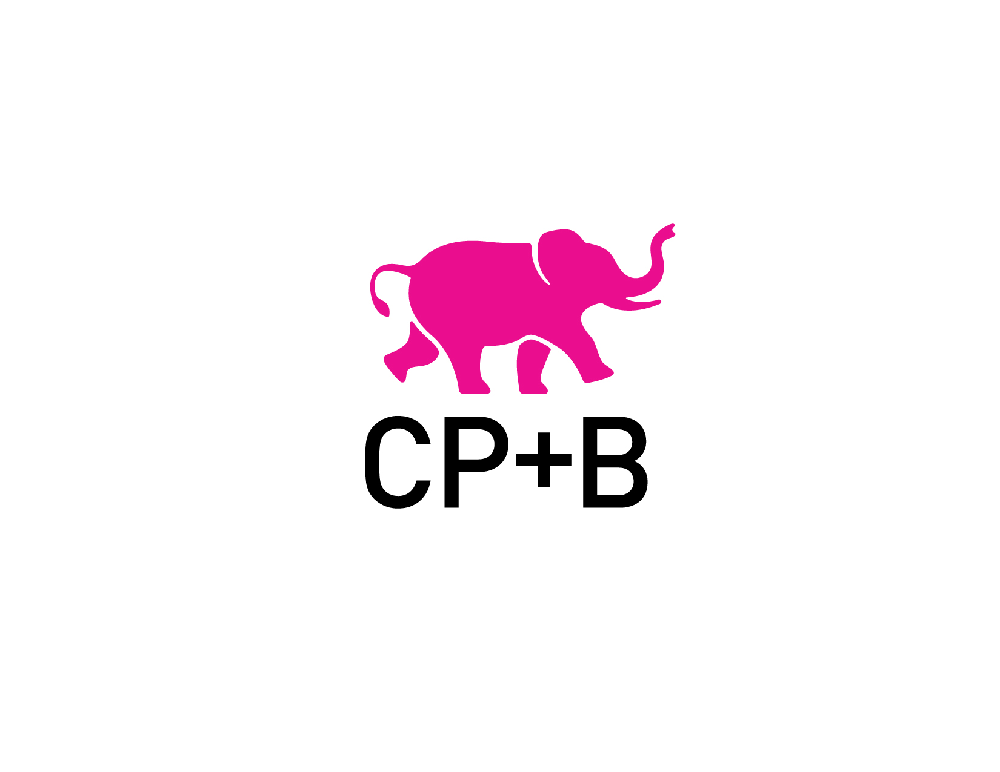
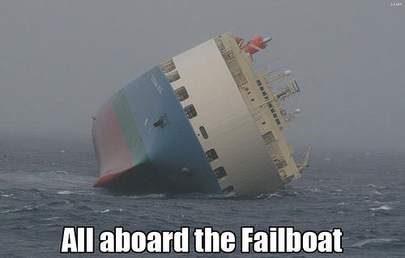
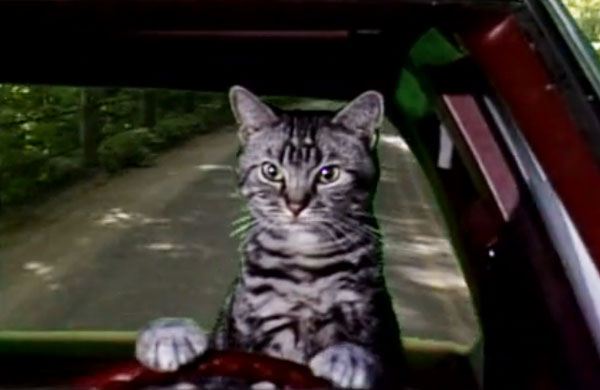

The Stage

Enterprise Software™
We can't build a useful website until
- A host is chosen
- The creative direction is defined
- This has to happen before technical work can start.
Six Weeks
TODO: This logo is the best I've found, and isn't good :)


To succeed, we need a non-blocking technical architecture.
Decompose the system
In a way, it's like winning at "Lip Synch Battle"
TODO: Need Rules of Lip Synch Battle
TODO: Need images from lip synch battle bit.
- Be flexible
- Have some bits prepared
- You won't know what is coming, but you can practice how you will react
Our Non-Blocking Approach
The two biggest components are:
- A COPE Decoupled technology stack
- Semantic content model
So...Semantic what now?
So...Semantic whatsit?
We started designing the API thinking that setting outputs would unblock the app and front end teams
However that led to a lot of 1-1 endpoints - a non-agnostic API approach
...

The Dawn of the Semantic Content Model

The Dawn of the Semantic Content Model
Content structures that resemble real-life elements of your business
For the Tonight Show that meant putting the content resources together like the show.
Thinking Semantically: A joke is the smallest atomic unit of funny.
Thinking Semantically: A joke is the smallest atomic unit of funny.
Build from the smallest unique component of the show
Semantic and Abstract
Addresses volatility in trends and interests - gives you flexibility
Connects the dots between performance and production
Semantic Content Modeling Benefits
Benefits of Semantic Content Modeling:
- Shared Language for all teams
- Sustainable
- Looked like any other editorial process at NBC Digital
- Content is finally driving
In Practice
We ended up with a Semantic content model...MOSTLY
In Practice
Building Blocks
- video
- image
- image galleries
- carousels
- carousel items
- blog post
- guests
- queues (Arbitrary collection)
Semantic Elements
- Bits
- Segments
- Challenges
- Games
- Queues (as show)
The Second Part of our Non-blocking approach: The API
Establish Ins/Outs - essential to non-blocking multi-platform development
Could leverage some pre-exisiting API work
Provide consitent editorial/backend experience
Decouple backend Drupal concerns from speed dependent front-end itterations and deployment
More than meets the API
At its core: An OOP API built on Drupal services.
BUT...it was more than that - the product was the design as much as it was the API
The System is the Architect
API Concerns
TODO: Diagram the concerns and capabilities of Services Wrapper - generally describe what it was able to do.
That's no API, it's a PHPOOPAPI
Let us utilize strong PHP OOP resources
OOP inheritence let us shift Drupalisms lower down and simplify implementing classes
Simpler implementations allowed quicker and cleaner review of asynchronous work.
The API In practice.
The API was structured similarly so that calls could be placed in reliable ways.
An API call looks something like this:
TODO: API call
And returns something like this:
TODO: API results
Drupal as content provider - challenges
The Finale
Constraints Inspire Innovation
The timeline, the approach hid something surprising, something unusual...
Drupal Services as a Mindset
You have to have an entirely different mind set for Drupal as content provider vs Drupal as website.